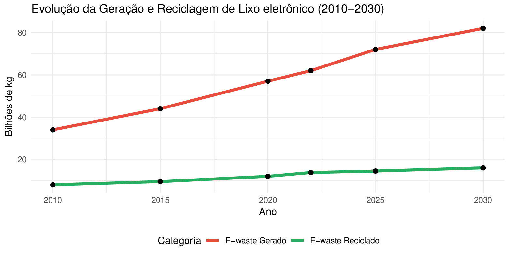
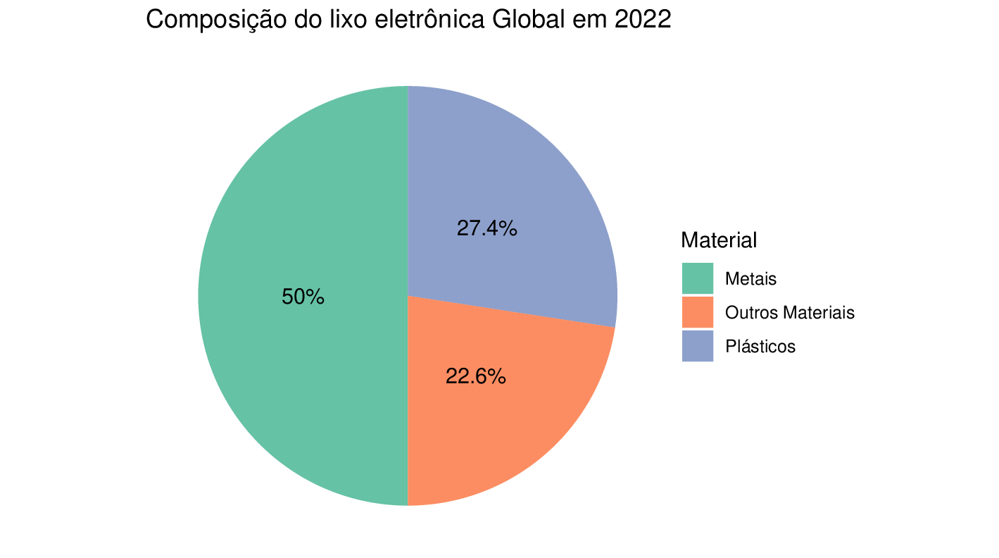
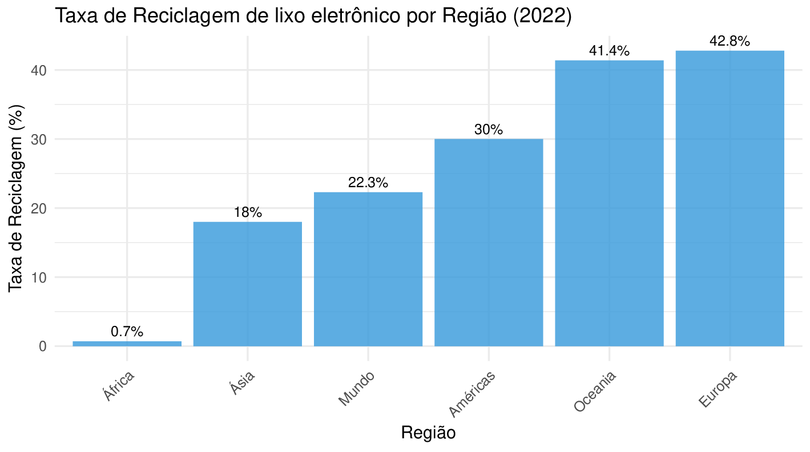
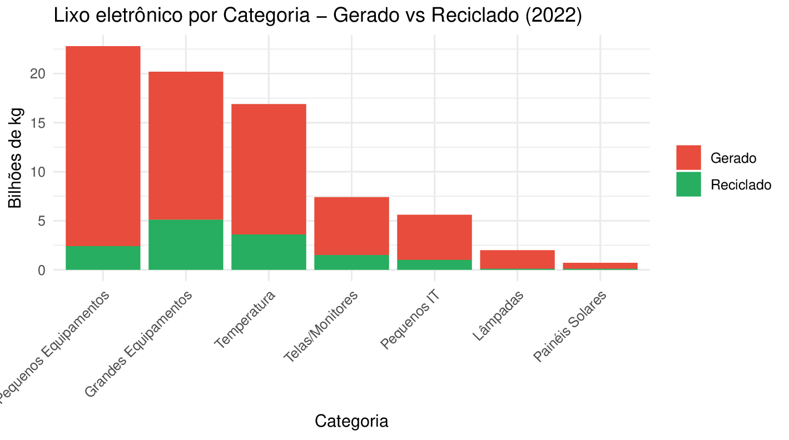
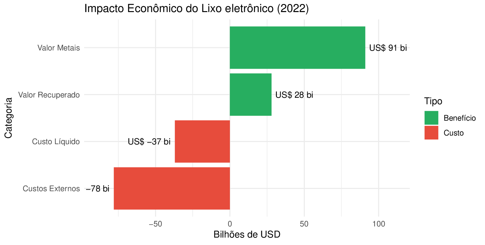
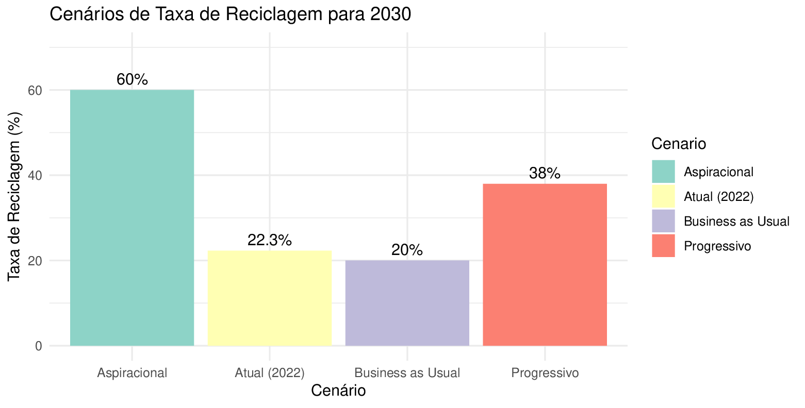
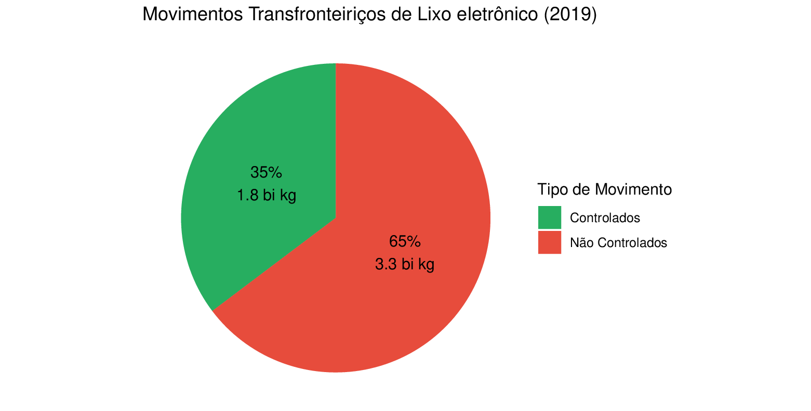

🔋 Recicla Mack! 🌿
Um projeto incrível que promove a reciclagem de lixo eletrônico, ajudando a preservar o meio ambiente. 🌍💚
Divulgamos diversos pontos de descarte espalhados pela cidade, facilitando para você fazer a sua parte! Nosso canal no YouTube também está repleto de informações e dicas sobre reciclagem eletrônica. ♻️
Junte-se a nós e faça a diferença!
Lixo Eletrônico: Um Desafio Ambiental Global
O Que É Lixo Eletrônico?
O lixo eletrônico, também conhecido como lixo eletrônico (e-waste) ou RAEE (Resíduos de Aparelhos Eletroeletrônicos), compreende todos os dispositivos elétricos e eletrônicos descartados, quebrados ou obsoletos. Isso inclui desde smartphones, computadores e tablets até eletrodomésticos, equipamentos de telecomunicações e dispositivos médicos.
A Dimensão do Problema
Crescimento Alarmante
Segundo o Global E-waste Monitor 2024, o mundo gerou 62 milhões de toneladas de lixo eletrônico em 2022, representando um aumento de 21% em apenas cinco anos. Este crescimento é três vezes mais rápido que o crescimento populacional mundial.
📈 Dados Globais de E-waste
Evolução da Geração de Lixo eletrônico (2010-2030)
Composição do Lixo eletrônico em 2022
Impactos Ambientais
- Contaminação do solo e água: Dispositivos eletrônicos contêm metais pesados como chumbo, mercúrio e cádmio
- Poluição do ar: A queima inadequada libera toxinas perigosas
- Desperdício de recursos: Metais preciosos como ouro, prata e cobre são perdidos
Por Que Reciclar é Crucial?
Preservação de Recursos Naturais
A reciclagem de eletrônicos permite recuperar materiais valiosos, reduzindo a necessidade de mineração e extração de novos recursos. Um smartphone, por exemplo, contém pequenas quantidades de ouro, prata e cobre que podem ser reaproveitadas.
Proteção à Saúde Humana
O manejo inadequado do e-waste expõe trabalhadores e comunidades a substâncias tóxicas, podendo causar problemas neurológicos, respiratórios e até câncer.
Situação Atual da Reciclagem
Apenas 22,3% do lixo eletrônico global foi adequadamente coletado e reciclado em 2022. O restante foi descartado em aterros, queimado ou gerenciado de forma informal, representando um enorme desperdício de recursos e uma ameaça ambiental.
🌍 Situação da Reciclagem por Região
Taxas de Reciclagem por Região
Reciclagem por Categoria de Equipamento
O Que Você Pode Fazer?
- Descarte consciente: Procure pontos de coleta especializados
- Repense compras: Avalie a real necessidade de trocar dispositivos
- Doe ou repasse: Equipamentos em bom estado podem ter vida útil estendida
- Informe-se: Conheça as políticas de logística reversa dos fabricantes
📍 Pontos de Lixo Eletrônico
- Parque Ibirapuera — Av. Pedro Álvares Cabral, s/n° (Portão 3)
- Parque Trianon — Rua Peixoto Gomide, 949
- Parque Prefeito Mário Covas — Av. Paulista, 1853
- Parque Independência — Av. Nazareth, s/n°
Para outros pontos de reciclagem, consulte: Recicla Sampa
🌱 Benefícios da Reciclagem
🌍 Ambientais
- Redução da poluição: componentes eletrônicos contêm metais pesados como chumbo, mercúrio e cádmio, que contaminam o solo e a água se descartados incorretamente.
- Preservação de recursos naturais: reciclar permite recuperar metais preciosos como ouro, prata, cobre e platina, evitando novas extrações minerais que degradam o meio ambiente.
- Diminuição do volume de resíduos: menos lixo eletrônico em aterros sanitários significa menos espaço ocupado e menor emissão de gases tóxicos.
- Menor consumo de energia: fabricar produtos a partir de materiais reciclados consome menos energia do que extrair e processar matéria-prima virgem.
💰 Econômicos
- Geração de empregos: a cadeia de coleta, triagem e reciclagem cria postos de trabalho diretos e indiretos.
- Aproveitamento de materiais valiosos: muitas peças de aparelhos podem ser reutilizadas ou revendidas, gerando lucro para cooperativas e empresas.
- Redução de custos industriais: indústrias economizam ao usar matérias-primas recicladas em vez de novas.
🤝 Sociais
- Conscientização e responsabilidade cidadã: estimula a educação ambiental e o consumo consciente de tecnologia.
- Inclusão social: cooperativas de catadores e programas de reciclagem eletrônica frequentemente beneficiam comunidades carentes.
- Melhoria da saúde pública: reduz a exposição da população a substâncias tóxicas provenientes do descarte incorreto.
⚙️ Tecnológicos e Estratégicos
- Fortalecimento da economia circular: incentiva o reuso e o redesenho de produtos, prolongando seu ciclo de vida.
- Inovação em design sustentável: motiva empresas a criar equipamentos mais fáceis de reciclar e com menor impacto ambiental.
Impacto Econômico do Lixo eletrônico
Fonte: Global E-waste Monitor 2024
🔮 Cenários Futuros e Movimentos Globais
Cenários de Reciclagem para 2030
Movimentos Transfronteiriços de Lixo eletrônico
🖥️ Checklist para Reciclar seu Computador
- Pesquise em sua região os pontos de coleta disponíveis.
- Remova seus dados pessoais e faça backup das informações.
- Leve o computador até o ponto de coleta e pronto!
🎮 ECO RESGATE: Missão E-lixo
Ajude a salvar o meio ambiente coletando lixo eletrônico corretamente!
🎮 Carregando jogo...
📋 Como Jogar
- 🎯 Objetivo: Alcance 100 pontos em 2 minutos
- 👨💻 Colete: Bateria, Placa, Celular, Fio (+15 pontos cada)
- 🚫 Evite: Papel, Metal, Plástico, Vidro (-5 pontos cada)
- 🗑️ Entregue os itens nas lixeiras corretas
- ⏰ Cuidado! Itens desaparecem após 8 segundos (-3 pontos se sumirem)
🎙️ Podcast Recicla Mack
Ouça nossos episódios sobre reciclagem de eletrônicos e sustentabilidade!
Reciclagem de Eletrônicos: Um Debate Necessário
Conversa sobre a importância do descarte correto de lixo eletrônico e seus impactos ambientais.
Inovações em Reciclagem Tecnológica
Explorando novas tecnologias e métodos para reciclagem de componentes eletrônicos.
Próximo Episódio
Novo conteúdo sobre sustentabilidade e tecnologia em breve!
🧠 Quiz: Você sabe descartar seu lixo eletrônico?
Teste seus conhecimentos sobre reciclagem de eletrônicos!
📚 Materiais Educativos
Baixe nossos materiais gratuitos e aprenda mais sobre reciclagem de eletrônicos:
Guia de Descarte de Celulares
Aprenda como descartar seu smartphone antigo corretamente
⬇️ Baixar PDF (113 KB)Manual de Reciclagem de Computadores
Passo a passo para reciclar computadores e notebooks
⬇️ Baixar PDF (3.02 MB)Cartilha de Baterias e Pilhas
Como descartar baterias e o perigo do descarte incorreto
⬇️ Baixar PDF (485 KB)Impacto Ambiental do Lixo eletrônico
Entenda os efeitos do lixo eletrônico no meio ambiente
⬇️ Baixar PDF (72 KB)💡 Dica: Compartilhe esses materiais com amigos e familiares!
💡 Sobre Nós
Somos o Recicla Mack, um projeto de extensão da Faculdade de Computação e Informática da Universidade Presbiteriana Mackenzie.
Sandra Bozolan
Orientadora do Projeto
Pós-doutoranda pela UNICAMP, doutora e mestre em Tecnologias da Inteligência e Design Digital pela Pontifícia Universidade Católica de São Paulo, especialista em Segurança da Informação e graduada em Tecnologia da Informação. Professora na PUC-SP nos cursos de Ciências da Computação e Engenharia de Sistemas Ciber-Físicos. Professora na Universidade Presbiteriana Mackenzie. Atua como professora no curso de bacharelado em Ciência da Computação e Sistemas da Informação; nos cursos tecnólogos Gestão em Análise e Desenvolvimento de Sistemas e Gestão em Tecnologia da Informação.
Guilherme
Designer e Comunicador
Responsável pelo design visual, comunicação nas redes sociais e divulgação dos pontos de coleta de e-waste.

William M
Desenvolvedor Front-end
Responsável pelo desenvolvimento do site, interface do usuário e integração do jogo educativo sobre reciclagem eletrônica.
Mateus
Pesquisador de Conteúdo
Encarregado da pesquisa sobre lixo eletrônico, análise de dados,podcast e produção de conteúdo educativo para o projeto.
Guilherme
Pesquisador de Conteúdo
Encarregado da pesquisa sobre lixo eletrônico, análise de dados,podcast e produção de conteúdo educativo para o projeto.
Saiba mais em: FCI Mackenzie Extensão